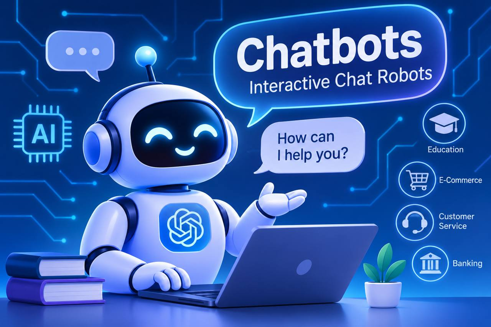

المقدمة
شهد العالم في السنوات الأخيرة تطورًا كبيرًا في تكنولوجيا المعلومات والاتصالات، وأصبحت شبكة الإنترنت والمنصات الإلكترونية من أهم الوسائل المستخدمة في التعليم والتجارة وتقديم الخدمات والتواصل بين الأفراد والمؤسسات. ومع هذا التطور، ظهرت تقنيات حديثة تهدف إلى تسهيل تعامل المستخدمين مع المواقع والتطبيقات الإلكترونية، ومن أبرز هذه التقنيات روبوتات الدردشة التفاعلية.
أصبحت روبوتات الدردشة من الأدوات المهمة التي تعتمد عليها المؤسسات والشركات لتقديم المعلومات والإجابة عن استفسارات المستخدمين بسرعة، كما ساهمت في تحسين تجربة المستخدم وتوفير الوقت والجهد. ويهدف هذا البحث إلى التعرف على مفهومها وأنواعها وكيفية عملها واستخداماتها ومميزاتها والتحديات التي تواجهها.
عرض الموضوع
أولًا: مفهوم روبوتات الدردشة التفاعلية
روبوتات الدردشة التفاعلية هي برامج حاسوبية مصممة للتواصل مع المستخدمين من خلال المحادثات النصية أو الصوتية، بحيث تستطيع استقبال الأسئلة والطلبات وتقديم إجابات أو إرشادات مناسبة وفقًا لطريقة عملها والتقنيات المستخدمة فيها. وتوجد في مواقع الويب والتطبيقات الإلكترونية ومنصات التواصل الاجتماعي.

ثانيًا: أنواع روبوتات الدردشة التفاعلية
1- روبوتات الدردشة القائمة على القواعد: تعتمد على مجموعة من القواعد والأسئلة والإجابات المحددة مسبقًا، وتعمل وفق مسارات محادثة مبرمجة. ومن أمثلتها روبوت يعرض اختيارات لمعرفة الرصيد أو تجديد الباقة.
2- روبوتات الدردشة المعتمدة على الذكاء الاصطناعي: تستخدم تقنيات الذكاء الاصطناعي والتعلم الآلي ومعالجة اللغة الطبيعية لفهم أسئلة المستخدمين والتعامل مع صيغ مختلفة للطلب الواحد.
3- روبوتات الدردشة الصوتية: تتيح التفاعل مع المستخدم من خلال الكلام بدلًا من الكتابة، مثل المساعدات الصوتية في الهواتف الذكية.
مقارنة بين أنواع روبوتات الدردشة
| النوع | طريقة العمل | مثال |
|---|---|---|
| القائمة على القواعد | اختيار إجابة من مسارات محددة مسبقًا | روبوت خدمة عملاء يعرض قائمة اختيارات |
| المعتمدة على الذكاء الاصطناعي | تحليل اللغة وفهم الطلب وإنشاء رد مناسب | روبوت يشرح سؤالًا تعليميًا بطرق مختلفة |
| الصوتية | استقبال الأوامر الصوتية وتقديم استجابة صوتية | المساعد الصوتي في الهاتف |
ثالثًا: كيفية عمل روبوتات الدردشة
تختلف طريقة العمل باختلاف نوع الروبوت، ولكن يمكن توضيح العملية الأساسية في الخطوات الآتية:
- استقبال المدخلات: يكتب المستخدم سؤالًا أو يرسل أمرًا صوتيًا.
- تحليل الطلب: يحلل النظام السؤال لتحديد الكلمات المهمة أو المعنى المقصود.
- تحديد الاستجابة: يختار الروبوت إجابة مبرمجة أو ينشئ إجابة باستخدام الذكاء الاصطناعي.
- عرض النتيجة: يقدم الروبوت الإجابة للمستخدم في صورة نصية أو صوتية.
- استكمال المحادثة: يمكن للمستخدم طرح سؤال آخر أو طلب توضيح إضافي.
رابعًا: أهم استخدامات روبوتات الدردشة
- خدمة العملاء: الإجابة عن الأسئلة المتكررة وتوجيه المستخدم إلى القسم المناسب.
- التعليم الإلكتروني: تقديم شروحات إضافية وتوضيح المفاهيم الصعبة والتدرب على الأسئلة.
- التجارة الإلكترونية: مساعدة العملاء في اختيار المنتجات ومعرفة مواصفاتها وتتبع الطلبات.
- الخدمات المصرفية: تقديم معلومات عامة عن الخدمات والحسابات والإجابة عن الاستفسارات.
- التسويق والتواصل: الرد على استفسارات العملاء بشأن المنتجات والعروض.
- الخدمات الحكومية والإدارية: توضيح خطوات التقديم والمستندات المطلوبة ومواعيد التسجيل.
خامسًا: مميزات روبوتات الدردشة
- السرعة في تقديم الخدمات والإجابة عن الأسئلة البسيطة.
- التوافر المستمر وإمكانية تقديم المساعدة على مدار الساعة بحسب النظام.
- تقليل التكاليف والجهد في التعامل مع الاستفسارات المتكررة.
- تحسين تجربة المستخدم وتسهيل الوصول إلى المعلومات.
سادسًا: التحديات
قد تواجه روبوتات الدردشة تحديات مثل عدم دقة بعض الإجابات، وصعوبة فهم بعض الأسئلة غير المتوقعة، ومخاطر الخصوصية وأمن المعلومات. لذلك ينبغي التحقق من المعلومات المهمة وحماية البيانات وإتاحة التدخل البشري عند الحاجة.
الخاتمة
يتضح أن روبوتات الدردشة التفاعلية أصبحت من الأدوات المهمة في عالم الإنترنت والمنصات الإلكترونية؛ لقدرتها على تسهيل التواصل وتوفير المعلومات والإجابة عن الاستفسارات. ويمكن أن تسهم في تطوير الخدمات الإلكترونية وتحسين تجربة المستخدم، بشرط استخدامها بطريقة واعية والتحقق من المعلومات المهمة والاهتمام بحماية البيانات.
المراجع
المراجع التالية مصادر إلكترونية للاستزادة حول مفهوم روبوتات الدردشة وتقنياتها: